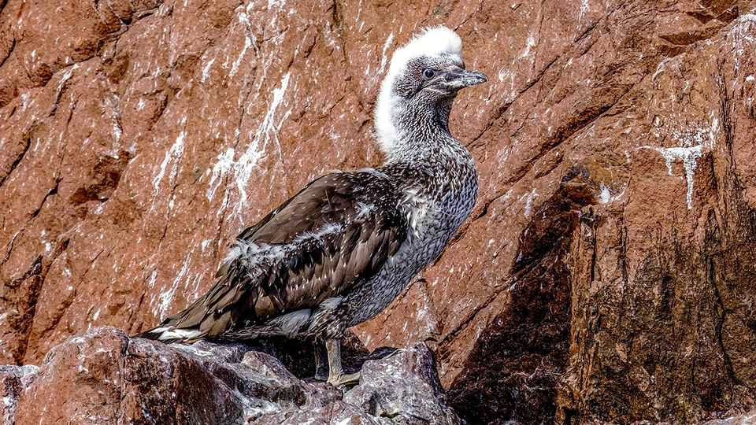
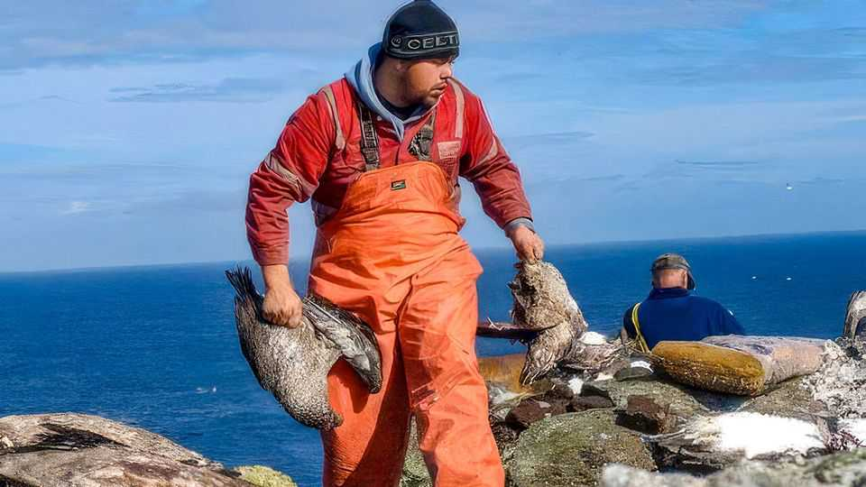

A ban on an ancient hunt exposes a divide in Scottish nationalism
The controversy over the Hebridean tradition of killing gannet chicks

Aug 13th 2026
Almost every summer since 1549, a group of men from the Isle of Lewis has sailed to an uninhabited islet in the North Atlantic to hunt baby birds. The gugas (Gaelic for gannet chicks) were slain with a club before being gutted, salted and preserved in brine to be eaten year-round as a local delicacy.
Yet this year's hunt won’t go ahead. The Scottish National Party’s natural-heritage body refused to grant it permission. NatureScot cited a study showing that the hunt could dramatically harm the islet’s population of gannets. Opponents, including the local Labour MP, say the outcome was “reverse engineered” to appease animal-rights activists.

The move exposes a divide within Scottish nationalism. It wants to protect cultural heritage from the British state, but it also seeks to dismantle bits—like the guga hunt—that are out of touch with its progressive sensibility.
This tension is not new. In January 2025 the country’s exam board removed Robert Burns as a stand-alone author for students in their penultimate year of secondary education to make way for more “diverse works”. Later that year the SNP drove through legislation that could force historic Scottish families to split up their great estates to water down highly concentrated land ownership.
Scotland’s nationalist movement has never been organised solely around culture (in the way that those in Wales and Catalonia coalesce around protecting native tongues). It has a leftist edge—in defiance of England’s perceived conservatism. And its leftists have no desire to defend the murder of baby birds, even if it’s a treasured tradition. ■